Observable outcome: each developer can name one public behavior, arrange the smallest representative AEM context, exercise a real model or service boundary and prove that the focused test fails without the behavior before it passes with the minimum fix.
Topic summary
A useful unit test protects behavior a consumer can observe, not private methods, field layout or incidental call order. Arrange representative content, configuration and dependencies; act once through the public contract; then assert one result, state or deliberate failure.
JUnit Jupiter owns test lifecycle and assertions. AEM Mocks supplies the supported in-memory Sling, repository and OSGi boundaries without starting an AEM SDK. It does not prove browser, Dispatcher, deployment or full-runtime behavior, so the test-double decision must stop at the smallest truthful level.
- Protect one observable behavior through a public contract.
- Keep Arrange, Act and Assert explicit and diagnosable.
- Load only the AEM state and collaborators the behavior needs.
- Exercise Sling Models through creation and services through activation.
- Observe the regression check red before accepting green evidence.
30-minute agenda
| Time | Slide | Facilitation |
|---|
| 0–2 | 1 · Opening | Preview behavior contracts, representative context and regression evidence. |
| 2–5 | 2 · Test boundary | Separate observable behavior from implementation shape. |
| 5–8 | 3 · Test anatomy | Read one explicit Arrange–Act–Assert behavior check. |
| 8–11 | 4 · JUnit lifecycle | Connect extension setup, fresh state, execution, assertion and cleanup. |
| 11–14 | 5 · AEM Mocks boundary | Distinguish the in-memory platform boundary from a running SDK. |
| 14–17 | 6 · Sling Model test | Build a model from minimal registered content and inspect creation failures. |
| 17–20 | 7 · Content states | Protect configured, missing, invalid and intentional legacy contracts. |
| 20–23 | 8 · Service activation | Inject, activate and retrieve an OSGi service through its public interface. |
| 23–25 | 9 · Test doubles | Choose a real object, AEM Mock, small double or integration test. |
| 25–27 | 10 · Red to green | Capture focused failing and passing evidence, then run the full core suite. |
| 27–28 | 11 · Key takeaways | Consolidate five decisions for Week 4 practice. |
| 28–30 | 12 · Questions | Questions from the audience only; no additional exercise. |
Complete slide deck
Study each slide with its presenter notes, then copy or download the PNG.
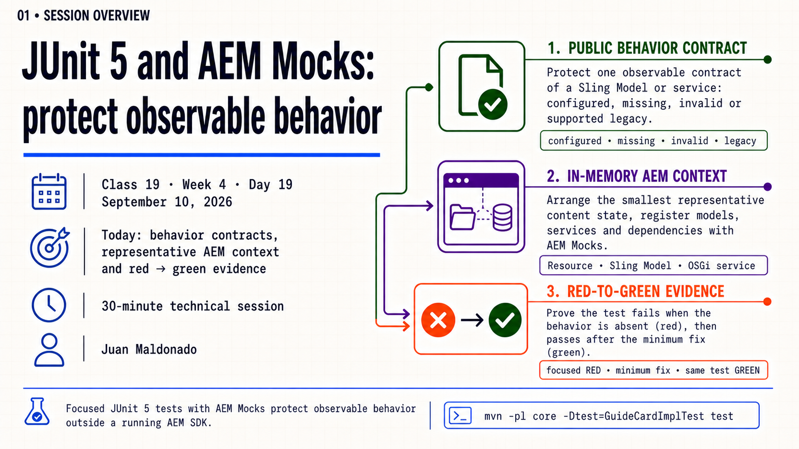
Detailed presenter notes
- Goal: learn one repeatable path for protecting a Sling Model or service behavior.
- Threads: observable contracts, representative AEM state and red-to-green evidence.
- Continuity: Classes 17 and 18 gave the behavior an owner; this class proves that owner keeps its promise.
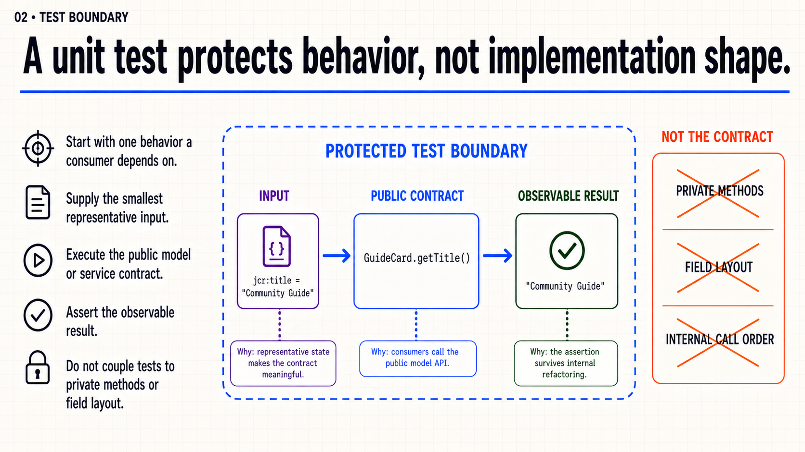
Detailed presenter notes
- Contract: begin with one result a consumer depends on.
- Boundary: supply representative input and act through the public model or service API.
- Avoid: private methods, field layout and incidental call order are not the protected promise.
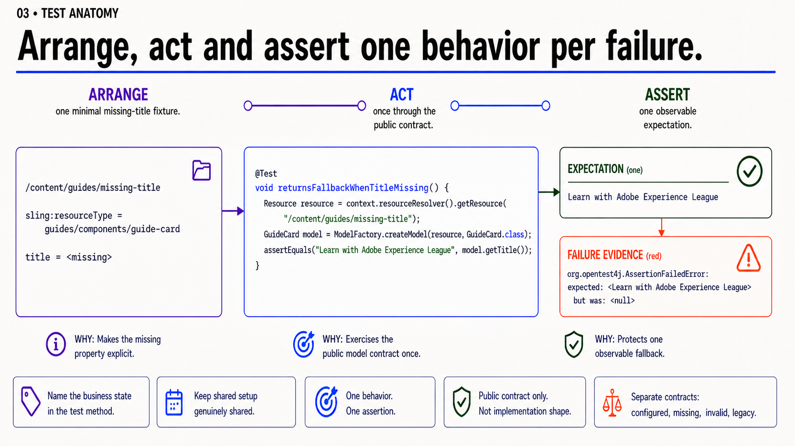
Detailed presenter notes
- Arrange: select representative content and only the dependencies the state needs.
- Act: call the public contract once.
- Assert: name the business state and expectation so the failure is immediately diagnosable.
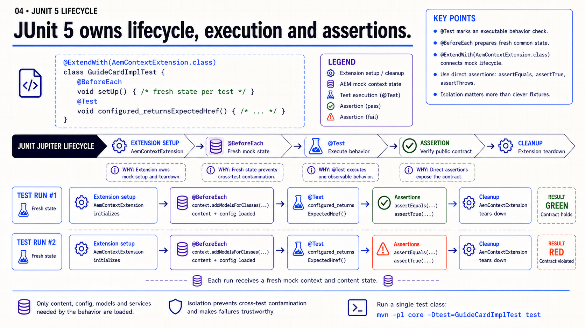
Detailed presenter notes
- Lifecycle: the extension prepares and cleans the AEM mock context.
- Fresh state:
@BeforeEach runs before every independent @Test.
- Assertions: prefer direct Jupiter assertions over clever fixture inheritance.
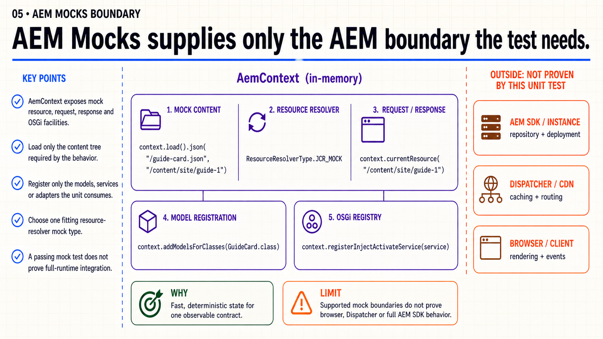
Detailed presenter notes
- Inside: mock content, request and response state, model registration and an OSGi registry.
- Restraint: load only the tree and register only the collaborators needed by the behavior.
- Limit: a passing mock test does not prove Dispatcher, browser, deployment or full-runtime behavior.
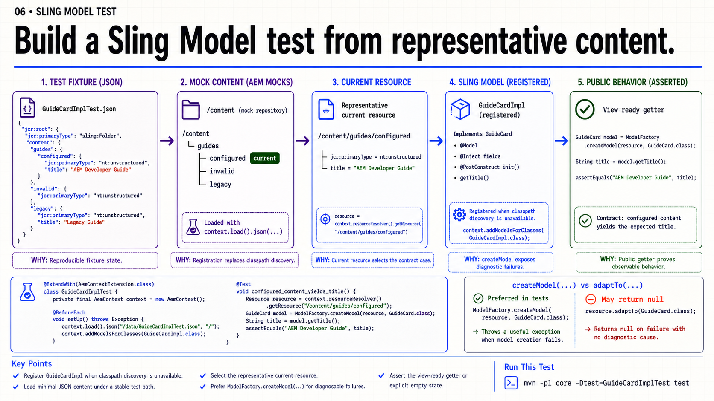
Detailed presenter notes
- Fixture: load minimal JSON content at a stable path and select the exact scenario resource.
- Registration: register the model when test-time classpath discovery is unavailable.
- Diagnosis: prefer
ModelFactory.createModel when a useful creation exception is better than null.
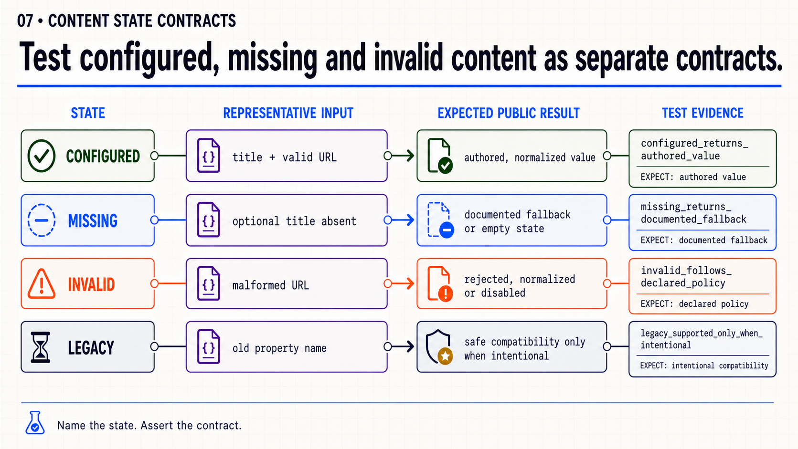
Detailed presenter notes
- Configured: return the authored value after documented normalization.
- Missing or invalid: produce the explicit fallback, empty, rejected or disabled state in the production contract.
- Legacy: preserve old content only when compatibility is intentional and named by a test.
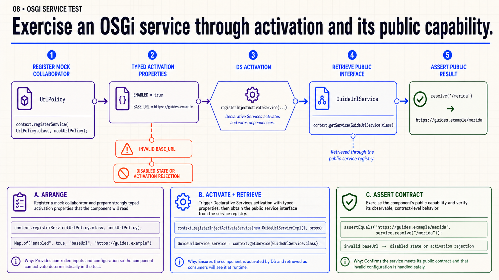
Detailed presenter notes
- Arrange: register required collaborators and representative activation properties.
- Activation: use
registerInjectActivateService instead of constructing a partial implementation.
- Contract: retrieve the public service interface and assert its deliberate valid or invalid result.
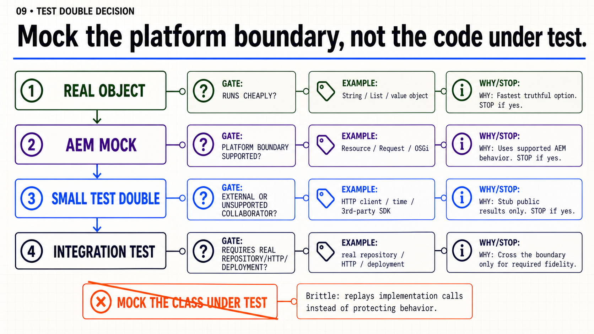
Detailed presenter notes
- Stop early: use the real object when it is fast and deterministic in memory.
- Boundary: use AEM Mocks for supported platform behavior and a small double only for external or unsupported collaborators.
- Fidelity: move to integration evidence when the behavior needs a real repository, HTTP stack or deployment.
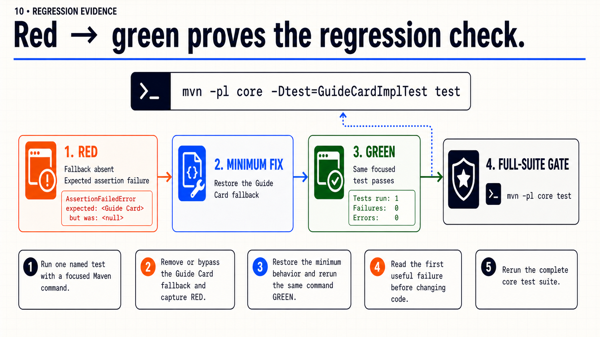
Detailed presenter notes
- Red: remove or bypass the fallback and capture the expected focused failure.
- Green: restore only the minimum behavior and rerun the same named test.
- Gate: after the regression passes, run the complete
core test suite.
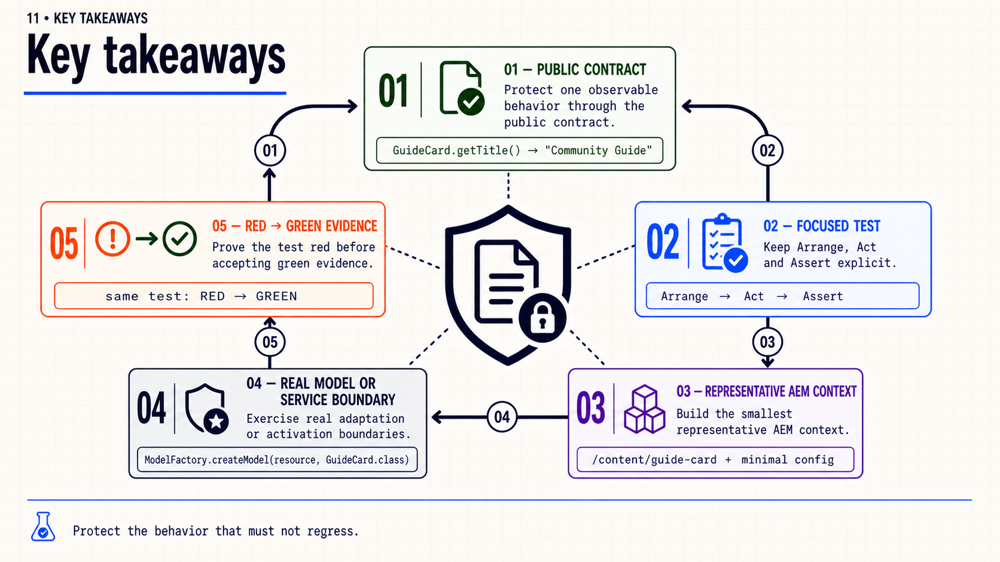
Detailed presenter notes
- Focus: name one public behavior and keep Arrange, Act and Assert independently diagnosable.
- Context: build only the AEM state needed by that behavior.
- Evidence: exercise the real adaptation or activation boundary and prove the test red before green.
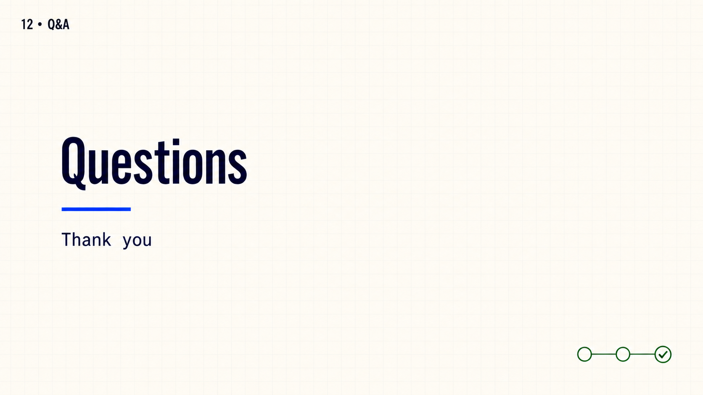
Detailed presenter notes
- Close: leave the slide open for questions from the group.
- Boundary: do not add another prompt, recap or exercise.
Guide Card testing practice
- Name one public Guide Card behavior that HTL or another consumer depends on.
- Write separate focused tests for configured, missing and invalid content.
- Load only the representative JSON tree and register only the model or collaborator classes required by each state.
- Show one test failing when the protected fallback is absent, then passing after the minimum behavior is restored.
- Run the complete
core test suite after the focused regression passes.
Acceptance: focused JUnit 5 tests pass; representative AEM Mocks state is explicit; at least one test is observed failing without the protected behavior; assertions target public output rather than private implementation shape.
Official reading
{kind=link}
{kind=link}
{kind=link}
{kind=link}
{kind=link}
{kind=link}
{kind=link}
{kind=link}
{kind=link}
{kind=link}
{kind=link}
{kind=link}